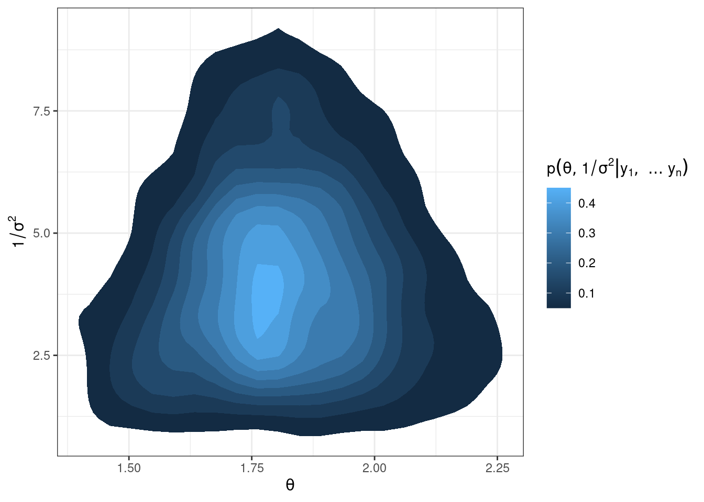

##########################
# example from Hoff ch6 #
##########################
# data
y = c(1.64, 1.70, 1.72, 1.74, 1.82, 1.82, 1.82, 1.90, 2.08)
mean.y = mean(y) ; var.y = var(y) ; n = length(y)
# priors
mu0 = 0
t20 = 100
nu0 = 1
s20 = 2
# starting point
S = 1000
PHI = matrix(nrow = S, ncol = 2)
phi = c(mean.y, var(y))
PHI[1, ] = phi
# Gibbs sampling
set.seed(360)
for(s in 2:S) {
## generate theta from sigma2
mun = (mu0 / t20 + n * mean.y * phi[2]) / (1 / t20 + n * phi[2])
t2n = 1 / (1 / t20 + n * phi[2])
phi[1] = rnorm(1, mun, sqrt(t2n))
## generate 1/sigma2 from theta
nun = nu0 + n
s2n = (nu0 * s20 + (n - 1) * var.y + n * (mean.y - phi[1])^2 ) / nun
phi[2] = rgamma(1, nun/2, nun * s2n / 2)
## update chain
PHI[s,] = phi
}Gibbs sampling
Non-conjugate priors
Definitions
Definition
A semiconjugate or conditionally conjugate prior is a prior that is conjugate to the full conditional posterior.
Note: the idea of a semiconjugate prior only makes sense when making inferences about two or more parameters.
Example:
\[ \begin{aligned} Y | \theta, \sigma^2 &\sim N(\theta, \sigma^2)\\ \theta & \sim N(\mu_0, \tau_0^2)\\ \frac{1}{\sigma^2} &\sim gamma(\nu_0/2, \nu_0\sigma_0^2/2) \end{aligned} \]
In this case, \(\tau_0^2\) is not a function of \(\sigma^2\) and thus \(p(\theta, \sigma^2) = p(\theta) p(\sigma^2)\).
Each prior is “semiconjugate” since \(p(\theta| \sigma^2, y_1,\ldots y_n)\) is normal and \(p(\frac{1}{\sigma^2} | \theta, y_1,\ldots y_n)\) is gamma but \(p(\theta, \sigma^2)\) is not conjugate to \(p(\theta, \sigma^2 | y_1,\ldots y_n)\).
Definition
A proper prior is a density function that does not depend on data and integrates to 1. If a prior integrates to a positive finite value, it is an unnormalized density that can be renormalized by being multiplied by a constant to integrate to 1. If a prior is not proper, we call the prior improper.
Example:
\[ \begin{aligned} Y | \theta, \sigma^2 &\sim N(\theta, \sigma^2)\\ p(\theta, \sigma^2) &= \frac{1}{\sigma^2} \end{aligned} \] \(p(\theta, \sigma^2)\) is an improper prior. \(p(\theta, \sigma^2)\) does not integrate to a finite value and thus cannot be renormalized. It is not a probability density. However, it yields a tractable posterior for \(\theta\) and \(\sigma^2\) (see p 79 of Hoff).
Noninformative priors
Priors are meant to describe our state of knowledge before examining data. In some cases we may wish to describe our ignorance a priori using a vague prior that plays a minimal role in the posterior distribution.
A common trap is to imagine that a flat, or uniform prior is uninformative. Previously, on homework 3 you showed a uniform prior on binary probability of success \(\theta\) is informative on the log-odds. Additionally, an improper flat prior may carry a lot of information, since most of the mass is infinitely far away.
Definition
The Jeffreys prior
\[ J(\theta) \propto \sqrt{I(\theta)} \] where \(I(\theta) = -E[\frac{\partial}{\partial\theta^2} \log p(Y|\theta) | \theta]\).
The defining feature of Jeffreys prior is that it will yield an equivalent result if applied to a transformed parameter. This principle of invariance is one approach to non-informative priors that works well for single parameter priors. Multiparameter extensions are often less useful.
Gibbs sampler
What if we have a non-conjugate prior? How can we can we look at \(p(\theta, \sigma^2 | y_1,\ldots y_n)\)?
In general, suppose we don’t know
\[ p(\theta, \sigma^2 | y_1,\ldots y_n) \] but we do know the full conditional posteriors
\[ \begin{aligned} p(\theta | \sigma^2, y_1, \ldots y_n)\\ p(\sigma^2 | \theta, y_1,\ldots y_n) \end{aligned} \] we can generate sample \(\theta^{(s)}, \sigma^{2(s)}\) from the joint posterior by the following algorithm:
- sample \(\theta^{(s+1)}\) from \(p(\theta | \sigma^{2(s)}, y_1,\ldots y_n)\)
- sample \(\sigma^{2(s+1)}\) from \(p(\sigma^2|\theta^{(s+1)}, y_1,\ldots, y_n)\)
- let \(\phi^{(s+1)} = \{ \theta^{(s+1)}, \sigma^{2(s+1)} \}\)
iterate steps 1-3 \(S\) times.
This algorithm is called the Gibbs sampler,
- it creates a dependent set of values \(\phi^{(1)} \ldots \phi^{(S)}\),
- the sequence is called a Markov chain,
- the samples let us approximate the posterior i.e. the histogram of \((\phi^{(1)},\ldots \phi^{(S)})\) is a Markov chain Monte Carlo approximation to \(p(\phi | y_1,\ldots y_n)\).
Example: in the semiconjugate normal model described above, the resulting posteriors are:
\[ \theta | \sigma^2, y_1,\ldots y_n \sim N(\mu_n, \tau_n^2), \] where \(\mu_n = \frac{\mu_0/\tau_0^2 + n\bar{y} /\sigma^2}{1/{\tau_0^2} + n/\sigma^2}\) and \(\tau_n^2 = \left( \frac{1}{\tau_0^2 }+ \frac{n}{\sigma^2} \right)^{-1}\) and
\[ \sigma^2 | \theta, y_1, \ldots y_n \sim invgamma(\nu_n/2, \nu_n \sigma^2_n / 2) \]
where \(\nu_n = \nu_0 + n\), \(\sigma_n^2 = \frac{1}{\nu_n} [\nu_0 \sigma_0^2 + n s^2_n(\theta)]\) and \(s^2_n(\theta) = \frac{1}{n}\sum (y_i - \theta)^2\).
Note: in this code we use the identity \(n s_n^2(\theta) = (n-1)s^2 + n (\bar{y} - \theta)^2\).

library(tidyverse)
library(latex2exp)
# plotting the joint posterior
df = as.data.frame(PHI)
names(df) = c("theta", "prec")
df %>%
ggplot(aes(x = theta, y = prec)) +
stat_density_2d(aes(fill = ..level..), geom = "polygon") +
labs(x = TeX("$\\theta$"),
y = TeX("$1/\\sigma^2$"),
fill = TeX("$p(\\theta, 1/\\sigma^2 | y_1, \\ldots y_n)$")) +
theme_bw()
Definition
Since the sequence \(\{\phi^{(s)} \}\) depends on \(\phi^{(0)}, \ldots \phi^{(s-1)}\) only through \(\phi^{(s-1)}\) we say the sequence is memoryless. This is called the Markov property, and so the sequence is a Markov chain.
“What happens next depends only on the state of affairs now”
Under some conditions,
\[ p(\phi^{(s)} \in A) \rightarrow \int_A p(\phi) d\phi \ \ \text{ as } s \rightarrow \infty \]
i.e. the sampling distribution of \(\phi^{(s)}\) approaches the target distribution as \(s \rightarrow \infty\) regardless of \(\phi^{(0)}\).
Furthermore,
\[ \frac{1}{S} \sum_{s=1}^S g(\phi^{(s)}) \rightarrow E[g(\phi)] \]
Important
Big take-away: if we can sample from the full conditional posteriors, we can construct a Markov chain with samples from the joint posterior! We can then use Monte Carlo approximation to use the samples to summarize aspects of the posterior.